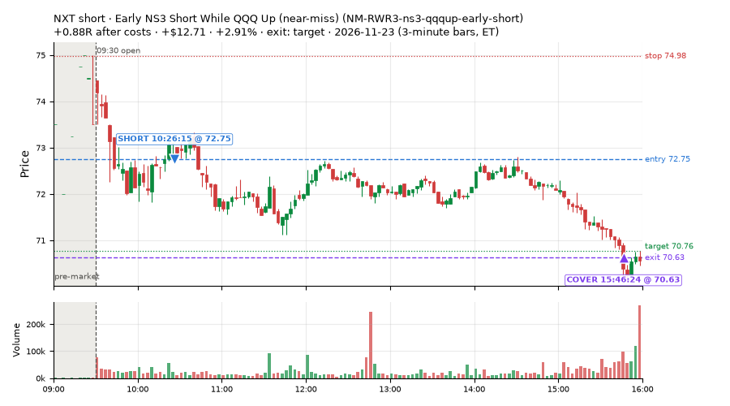
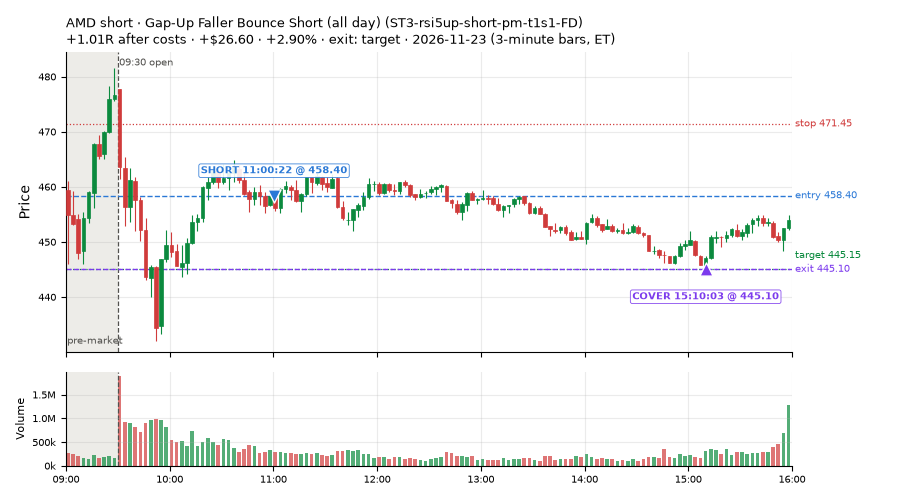
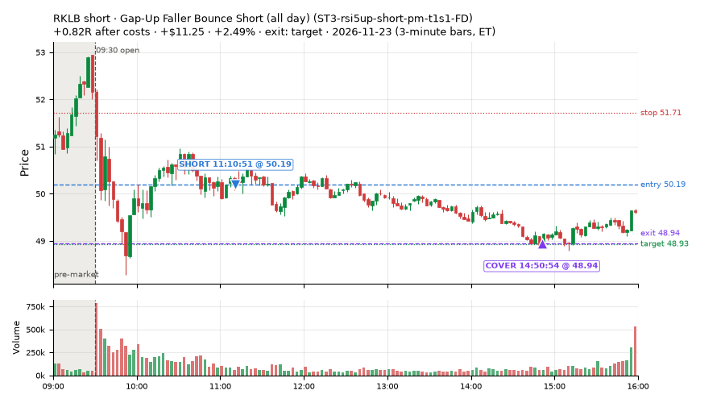
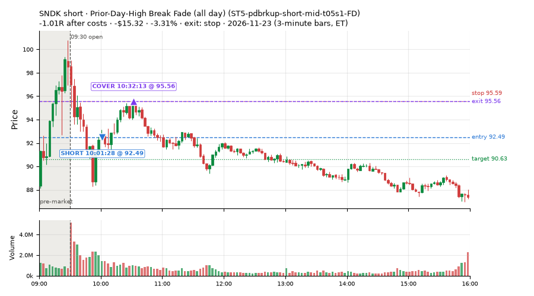
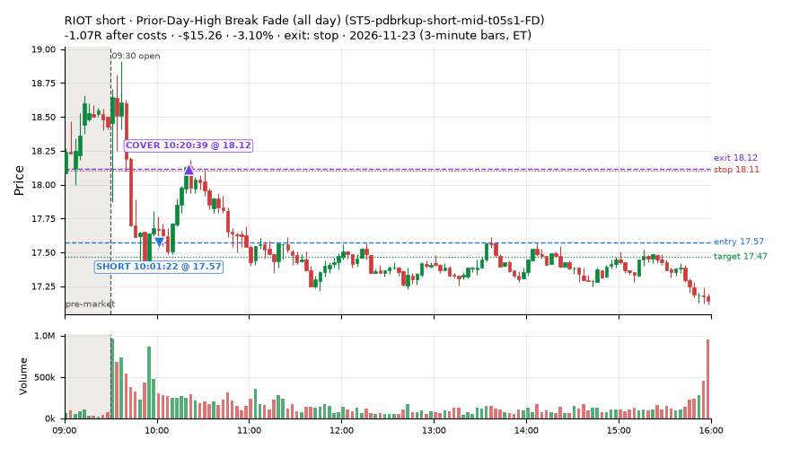
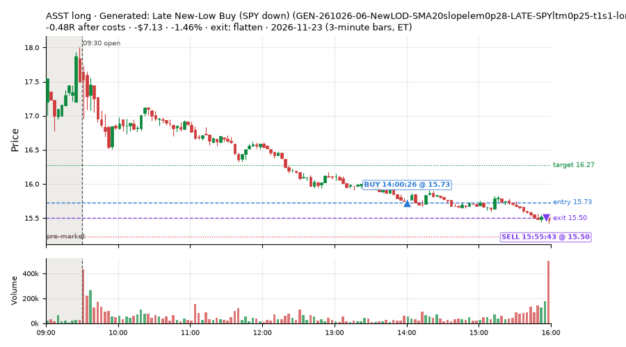
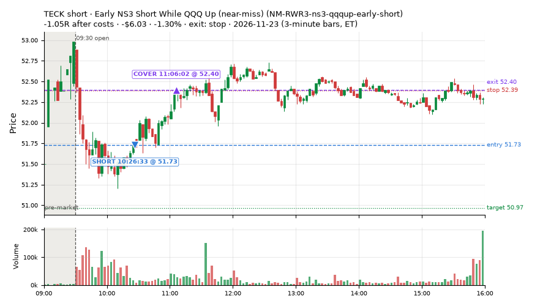
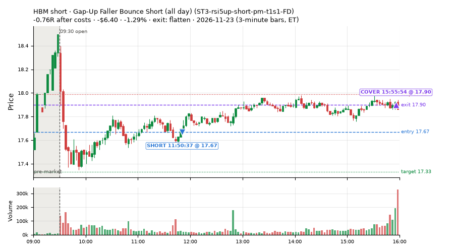

53 trades · win rate 64% · P/L $119.41
PROBATION: no live setup has passed both locked test periods. 10 owner-directed setups added 2026-10-08 (MarcoFlow top 5 + 5 new), untested live. RW6G1 (RW6 + VWAP band guard) added 2026-10-09, probation.

| Symbol | Setup | Side | In | Out | Entry | Exit | Exit reason | % gained | P/L |
|---|---|---|---|---|---|---|---|---|---|
| NXT | Early NS3 Short While QQQ Up (near-miss) (NM-RWR3-ns3-qqqup-early-short) | short | 10:26 | 15:46 | 72.75 | 70.63 | target | +2.91% | $12.71 |
| AMD | Gap-Up Faller Bounce Short (all day) (ST3-rsi5up-short-pm-t1s1-FD) | short | 11:00 | 15:10 | 458.40 | 445.10 | target | +2.90% | $26.60 |
| RKLB | Gap-Up Faller Bounce Short (all day) (ST3-rsi5up-short-pm-t1s1-FD) | short | 11:10 | 14:50 | 50.19 | 48.94 | target | +2.49% | $11.25 |
| Symbol | Setup | Side | In | Out | Entry | Exit | Exit reason | % lost | P/L |
|---|---|---|---|---|---|---|---|---|---|
| SNDK | ST5-pdbrkup-short-mid-t05s1-FD | short | 10:01 | 10:32 | 92.49 | 95.56 | stop | -3.31% | $-15.32 |
| RIOT | ST5-pdbrkup-short-mid-t05s1-FD | short | 10:01 | 10:20 | 17.57 | 18.12 | stop | -3.10% | $-15.26 |
| ASST | GEN-261026-06-NewLOD-SMA20slopelem0p28-LATE-SPYltm0p25-t1s1-long | long | 14:00 | 15:55 | 15.73 | 15.50 | flatten | -1.46% | $-7.13 |
| TECK | NM-RWR3-ns3-qqqup-early-short | short | 10:26 | 11:06 | 51.73 | 52.40 | stop | -1.30% | $-6.03 |
| HBM | ST3-rsi5up-short-pm-t1s1-FD | short | 11:50 | 15:55 | 17.67 | 17.90 | flatten | -1.29% | $-6.40 |








Signal to fill: median 2s, 90th percentile 4s (53 trades). Bars close each minute; the order follows the bar close.
Best excursion (MFE): median 0.49R; worst (MAE) median 0.45R. 15% of trades never got +0.25R in our favour; 0 reached +1R and still closed at or below 0.
| Symbol | Setup | Best R | Worst R | Closed R |
|---|---|---|---|---|
| CP | CWT12-flag-s1-long | +0.45 | -1.20 | -1.20 |
| PCOR | NM-RWR3-ns3-qqqup-early-short | +0.44 | -1.00 | -1.06 |
| AWK | GEN-261023-03-RSI5le13-VWAPatrlem0p34-OPEN-BRvwgt0p6-holdtr-short | +0.22 | -1.16 | -1.21 |
| SNDK | ST5-pdbrkup-short-mid-t05s1-FD | +0.39 | -1.01 | -1.01 |
| IR | ST5-pdbrkup-short-mid-t05s1-FD | +0.10 | -1.35 | -1.26 |
| Entry time | Trades | Win | Avg R | P/L |
|---|---|---|---|---|
| 09:50-10:30 | 14 | 57% | -0.18 | $0.18 |
| 10:30-11:30 | 13 | 69% | +0.22 | $62.72 |
| 11:30-13:00 | 11 | 64% | +0.16 | $34.04 |
| 13:00-14:00 | 4 | 100% | +0.39 | $8.67 |
| 14:00-16:00 | 11 | 55% | +0.11 | $13.80 |
| Setup | Trades | Win | Avg R after costs | Adj R (net of SPY) | Avg R ex-market (all sessions) | P/L |
|---|---|---|---|---|---|---|
| Spike-Pullback Flag Breakout (CWT12-flag-s1-long) | 1.0 | 0% | -1.20 | +0.43 | +0.29 (beta +0.71, n 17) | $-2.70 |
| Generated: Open Oversold Below-VWAP Short (GEN-261023-03-RSI5le13-VWAPatrlem0p34-OPEN-BRvwgt0p6-holdtr-short) | 1.0 | 0% | -1.21 | -1.73 | +0.33 (beta +0.58, n 8) | $-3.22 |
| Generated: Late New-Low Buy (SPY down) (GEN-261026-06-NewLOD-SMA20slopelem0p28-LATE-SPYltm0p25-t1s1-long) | 4.0 | 25% | -0.14 | -0.14 | -0.26 (beta +0.56, n 61) | $-7.04 |
| Index Dip Bounce 1 TQQQ (IDX1-qqq100-0955-TQQQ-trail) | 1.0 | 100% | +1.11 | +0.71 | – | $11.34 |
| * Shallow Nasdaq Dip, Breadth Turn (TQQQ) (near-miss) (LD2-qqq-dip015-breadthturn-tqqq-t05s1-long) | 1.0 | 100% | +0.26 | +0.16 | -0.12 (beta +2.55, n 5) | $4.07 |
| * SPY Dip of 0.2 ATR, Breadth Turn (SPXL, trailing) (near-miss) (LD6-spy-dip020atr-breadthturn-spxl-holdtr-long) | 1.0 | 100% | +0.29 | +0.17 | – | $4.38 |
| * Oversold Pop after an SPY Dip-Turn (trailing) (near-miss) (LD7-ns1-idxturn-holdtr-long) | 1.0 | 100% | +0.78 | +2.09 | +0.15 (beta +0.14, n 5) | $3.00 |
| Early NS3 Short While QQQ Up (near-miss) (NM-RWR3-ns3-qqqup-early-short) | 4.0 | 50% | -0.21 | -0.55 | +0.45 (beta +0.56, n 11) | $4.40 |
| Gap-Down Pop Fade, Heavy Selling (all day) — WB4: up-day entry cut + SPY exit 0.30% (RW3-gapdn-rsi5pop-flowsell-short-FD-WB4) | 2.0 | 50% | -0.19 | -0.79 | -0.14 (beta -0.70, n 24) | $-1.28 |
| Big Gainer SMA50 Cross Fade (all day) (RW6-ns2-up3-short-FD) | 3.0 | 33% | -0.26 | -0.42 | -0.12 (beta -0.46, n 17) | $-4.71 |
| Gap-Up Faller Bounce Short (all day) (ST3-rsi5up-short-pm-t1s1-FD) | 10.0 | 60% | +0.23 | +0.12 | -0.08 (beta -1.34, n 29) | $56.16 |
| Prior-Day-High Break Fade (all day) (ST5-pdbrkup-short-mid-t05s1-FD) | 18.0 | 72% | +0.13 | +0.13 | -0.02 (beta -1.19, n 27) | $38.02 |
| Midday-to-Close ETF Dip Buy (WB4 wide) (ULT-22-wb4-wide-etf-long) | 6.0 | 100% | +0.46 | +0.59 | +0.26 (beta +1.83, n 24) | $16.99 |
Market direction (SPY, beta 1) accounted for $29.05 of today's $119.41; the rest ($90.36) came from the setups themselves. Avg R net of SPY: +0.06 (incl. a hedge leg's cost; report only).
21 setups live today. Today: 134 signals, 53 taken, 1 lost because another setup held the symbol (1%). Since 2026-11-05 (13 sessions): 1255 signals, 579 taken, 7 lost to other setups (1%). Peak open positions today 24 of 400 slots. Earnings blackout removed 148 symbols before scanning.
Simulated playing time (not live): 672 what-if trades of signals not taken, avg -0.19R, 46% winners; of them 7 lost to another setup (avg +0.29R).
Silent: IDX3-spy075-0955-3x-trail, LD5-st2-breadthup-t05s1-long, GEN-261019-06-VWAPxUp-EMAdiffge0p29-PM-SPYgt0p5-holdtr-long, GEN-261026-10-ORBfailDn-EMAdChglem0p051-PM-BRopgt0p65-t1s1-long, NM-RWN4-ns2-spyup05-notfri-short
| Prio | Setup | Today sig / taken | Sessions | Signals / taken / trades | Taken/day | Expected/day | Lost to other setups | Lost to (setup n) | Top skip reasons | SIMULATED: not-taken n / avg R / win | Verdict |
|---|---|---|---|---|---|---|---|---|---|---|---|
| 1 | Gap-Down Pop Fade, Heavy Selling (all day) — WB4: up-day entry cut + SPY exit 0.30% RW3-gapdn-rsi5pop-flowsell-short-FD-WB4 | 4 / 2 | 5 | 52 / 24 / 24 | 4.80 | – | 0 | – | spread / quote / size 20, other 6, not shortable / shorts off 2 | 28 / +0.40R / 75% | ok 24.0 entries/week |
| 2 | Gap-Down Rebound Overbought Short (all day) — WB5: first entry per name-day (no refire) L3-gap-slope-rsi5hi-FD-WB5 | 42 / 0 | 3 | 100 / 6 / 6 | 2.00 | – | 0 | – | not shortable / shorts off 86, spread / quote / size 5, other 2 | 93 / -0.37R / 45% | slow 10.0 entries/week; ~6 weeks to 60 trades |
| 3 | RSI Collapse Dip Buy (all day) — WB1: skip when SPY up > 0.10% since 09:50 ST7-rsi50dn-long-pm-t1s1-FD-WB1 | 0 / 0 | 5 | 13 / 9 / 9 | 1.80 | – | 0 | – | spread / quote / size 3, other 1 | 4 / -0.58R / 25% | slow 9.0 entries/week; ~7 weeks to 60 trades |
| 4 | 20-Minute Opening Range Breakout — WB3: top 10 in play + price >= $20 orb20_a-WB3 | 2 / 0 | 5 | 5 / 2 / 2 | 0.40 | – | 0 | – | spread / quote / size 3 | 2 / -0.62R / 0% | slow 2.0 entries/week; ~30 weeks to 60 trades |
| 5 | Index Dip Bounce 1 TQQQ IDX1-qqq100-0955-TQQQ-trail | 1 / 1 | 13 | 2 / 2 / 2 | 0.15 | – | 0 | – | – | 0 / – | slow 0.8 entries/week; ~78 weeks to 60 trades |
| 6 | * SPY Dip of 0.2 ATR, Breadth Turn (SPXL, trailing) (near-miss) LD6-spy-dip020atr-breadthturn-spxl-holdtr-long | 1 / 1 | 13 | 2 / 2 / 2 | 0.15 | – | 0 | – | – | 0 / – | slow 0.8 entries/week; ~78 weeks to 60 trades |
| 7 | * Oversold Pop after an SPY Dip-Turn (trailing) (near-miss) LD7-ns1-idxturn-holdtr-long | 2 / 1 | 13 | 10 / 5 / 5 | 0.38 | – | 0 | – | spread / quote / size 2, price through stop/target 2, other 1 | 5 / +0.10R / 40% | slow 1.9 entries/week; ~31 weeks to 60 trades |
| 8 | Gap-Down Reclaim Fade, Afternoon (near-miss) NM-PM-gapdn-above-pdh-rvol-short | 0 / 0 | 13 | 5 / 1 / 1 | 0.08 | – | 0 | – | not shortable / shorts off 2, spread / quote / size 1, other 1 | 4 / -0.54R / 25% | slow 0.4 entries/week; ~156 weeks to 60 trades |
| 9 | Generated: Late Upper-Wick Short (SPY down) GEN-261029-07-UpWickge0p59-DayRngVsPrevle0p42-LATE-SPYltm0p5-t05s1-short | 0 / 0 | 6 | 58 / 48 / 48 | 8.00 | – | 0 | – | other 7, spread / quote / size 3 | 10 / +0.40R / 100% | ok 40.0 entries/week |
| 10 | Generated: Late New-Low Buy (SPY down) GEN-261026-06-NewLOD-SMA20slopelem0p28-LATE-SPYltm0p25-t1s1-long | 5 / 4 | 6 | 80 / 61 / 61 | 10.17 | – | 0 | – | other 11, spread / quote / size 8 | 19 / -0.14R / 42% | ok 50.8 entries/week |
| 11 | Prior-Day-High Break Fade (all day) ST5-pdbrkup-short-mid-t05s1-FD | 27 / 18 | 13 | 52 / 27 / 27 | 2.08 | 0.78 | 2 | ST7-rsi50dn-long-pm-t1s1-FD-WB1 2 | not shortable / shorts off 12, spread / quote / size 9, symbol held by another setup 2 | 25 / -0.04R / 64% | slow 10.4 entries/week; ~6 weeks to 60 trades |
| 12 | Generated: PM Gap-Down Above-VWAP Short GEN-261027-04-VWAPatrge0-Gaplem2-FromOpenlem2-PM-SPYdn-t1s1-short | 6 / 0 | 6 | 96 / 44 / 44 | 7.33 | – | 0 | – | spread / quote / size 19, other 18, not shortable / shorts off 15 | 52 / +0.26R / 67% | ok 36.7 entries/week |
| 13 | * Shallow Nasdaq Dip, Breadth Turn (TQQQ) (near-miss) LD2-qqq-dip015-breadthturn-tqqq-t05s1-long | 1 / 1 | 13 | 5 / 5 / 5 | 0.38 | – | 0 | – | – | 0 / – | slow 1.9 entries/week; ~31 weeks to 60 trades |
| 14 | Early NS3 Short While QQQ Up (near-miss) NM-RWR3-ns3-qqqup-early-short | 5 / 4 | 13 | 25 / 11 / 11 | 0.85 | – | 0 | – | spread / quote / size 7, not shortable / shorts off 5, other 2 | 14 / +0.36R / 71% | slow 4.2 entries/week; ~14 weeks to 60 trades |
| 15 | Generated: Open Oversold Below-VWAP Short GEN-261023-03-RSI5le13-VWAPatrlem0p34-OPEN-BRvwgt0p6-holdtr-short | 2 / 1 | 6 | 13 / 8 / 8 | 1.33 | – | 0 | – | spread / quote / size 4, not shortable / shorts off 1 | 5 / +0.74R / 40% | slow 6.7 entries/week; ~9 weeks to 60 trades |
| 16 | Gap-Up Faller Bounce Short (all day) ST3-rsi5up-short-pm-t1s1-FD | 16 / 10 | 13 | 50 / 29 / 29 | 2.23 | 1.35 | 1 | GEN-261027-05-VolRatioge1p5-ORLdistge0p41-ATRdge6-MID-BRvwgt0p7-t05s1-long 1 | not shortable / shorts off 11, spread / quote / size 8, symbol held by another setup 1 | 21 / -0.23R / 38% | slow 11.2 entries/week; ~5 weeks to 60 trades |
| 17 | Generated: Open First-Dip Short (extended) GEN-261022-04-RSI2le0-Eff6ge0p83-SMA20dge0p59-OPEN-BRvwlt0p5-t1s1-short | 0 / 0 | 6 | 19 / 5 / 5 | 0.83 | – | 0 | – | not shortable / shorts off 5, spread / quote / size 5, other 4 | 14 / +0.28R / 71% | slow 4.2 entries/week; ~14 weeks to 60 trades |
| 18 | Panic Flush Reversal (deep, 3x volume) CWT05-flush-m075-v3-long | 0 / 0 | 13 | 24 / 13 / 13 | 1.00 | – | 0 | – | other 6, spread / quote / size 2, broker rejected 2 | 10 / -0.17R / 60% | slow 5.0 entries/week; ~12 weeks to 60 trades |
| 19 | Spike-Pullback Flag Breakout CWT12-flag-s1-long | 3 / 1 | 13 | 28 / 17 / 17 | 1.31 | – | 0 | – | other 9, spread / quote / size 1, broker rejected 1 | 11 / +0.27R / 82% | slow 6.5 entries/week; ~9 weeks to 60 trades |
| 20 | Big Gainer SMA50 Cross Fade (all day) RW6-ns2-up3-short-FD | 11 / 3 | 7 | 56 / 17 / 17 | 2.43 | 7.12 | 2 | orb20_a-WB3 1, LD7-ns1-idxturn-holdtr-long 1 | not shortable / shorts off 28, spread / quote / size 7, symbol held by another setup 2 | 38 / +0.03R / 60% | slow 12.1 entries/week; ~5 weeks to 60 trades |
| 21 | Midday-to-Close ETF Dip Buy (WB4 wide) ULT-22-wb4-wide-etf-long | 6 / 6 | 2 | 27 / 24 / 24 | 12.00 | – | 0 | – | spread / quote / size 2, other 1 | 3 / -0.23R / 33% | ok 60.0 entries/week |
Every trade is attached as a CSV you can open and edit in Excel or Google Sheets. Live page: https://misiti15.github.io/MCF/live/